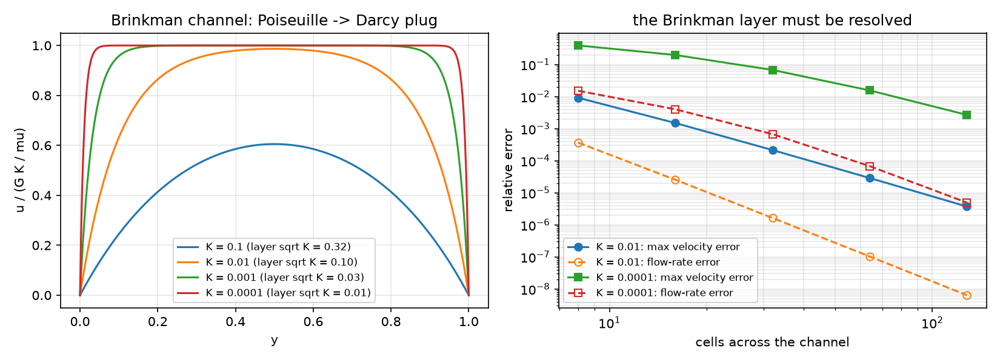
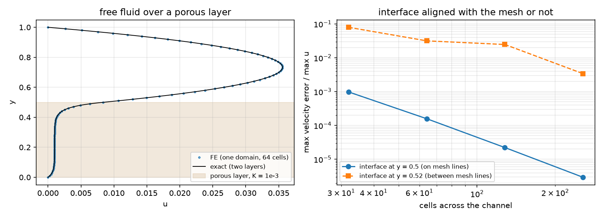
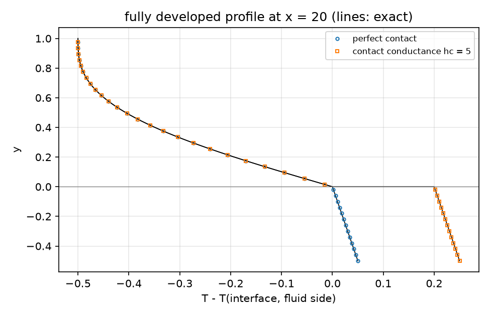
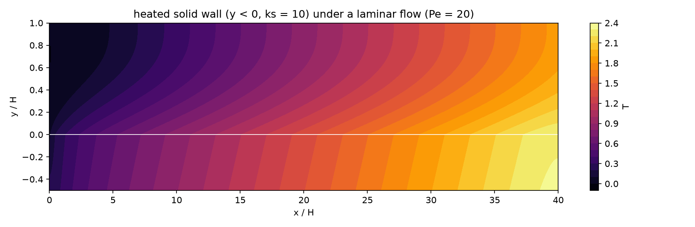
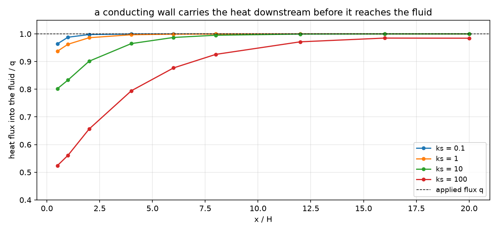

AI-based Materials and Process Simulation II
Week 13 — Porous Media and Conjugate Heat Transfer: Brinkman Layers, the Porous Interface, Forchheimer, Flow on a Submesh
Process Systems Laboratory
Department of Chemical and Biomolecular Engineering, SeoulTech
Today
| Part | Topic | Time |
|---|---|---|
| Quiz on Week 12 (closed-AI) | 10 min | |
| A | Flow in porous media — Darcy, Brinkman, Forchheimer; the Brinkman layer; free fluid over a porous bed | 30 min |
| B | One domain in DOLFINx — 1/K per cell, resolving the layer, aligning the interface, Ergun | 25 min |
| C | Conjugate heat transfer — flow on a submesh, heat everywhere; developed solution, energy balance, contact resistance | 40 min |
| D | LLM pitfalls · HW12 | 15 min |
Lab: W13_lab.ipynb (≈ 80 min) · Homework: W13_HW12.ipynb (due before Week 14) · Applications: packed and fixed beds, filters and membranes over a free stream, catalyst layers, heat exchangers and cooled reactor walls (AMPS I Week 12: Darcy as a mixed problem; Week 10 here: integrals on an interface between submeshes)
Part A · Flow in porous media
Three models of a porous medium
Superficial velocity \mathbf u, permeability K:
| model | equation | when |
|---|---|---|
| Darcy | \frac{\mu}{K}\mathbf u+\nabla p=\mathbf f | slow flow, far from walls and free fluid |
| Brinkman | -\mu_e\Delta\mathbf u+\frac{\mu}{K}\mathbf u+\nabla p=\mathbf f | near walls and interfaces (no-slip, shear) |
| Brinkman–Forchheimer | \dots+\beta\,|\mathbf u|\,\mathbf u | Re_p=\rho Ud_p/\mu\gtrsim1 (Ergun’s inertial term) |
All with \nabla\cdot\mathbf u=0. Brinkman adds a viscous term — and with it a layer of thickness \lambda=\sqrt{\mu_eK/\mu} at every wall and interface. Ergun for a packed bed: \frac1K=\frac{150(1-\varepsilon)^2}{\varepsilon^3d_p^2}, \beta=\frac{1.75\rho(1-\varepsilon)}{\varepsilon^3d_p}.
The Brinkman channel and its layer
0<y<1, no slip, pressure gradient G, \mu_e=\mu=1:
u=GK\Big(1-\frac{\cosh\frac{y-1/2}{\sqrt K}}{\cosh\frac1{2\sqrt K}}\Big),\qquad Q=GK\Big(1-2\sqrt K\tanh\frac1{2\sqrt K}\Big).
- K\to\infty: Poiseuille (Q=G/12). K\to0: Darcy plug u=GK with layers of width \sqrt K at the walls.
- K=10^{-4}: the layers are 0.01 thick and carry only 2 % of the flow (Q/Q_\text{Darcy}=0.98).
Free fluid over a porous bed
Porous layer 0<y<a, free fluid a<y<1. One domain: a single Brinkman equation with 1/K=0 in the fluid.
- Integrating by parts on each side: the weak form imposes continuity of u (the space) and of the shear stress \mu_e\partial_yu (natural) at y=a — nothing to write.
- Beavers–Joseph describe the same interface by a slip \partial_yu=\frac{\alpha}{\sqrt K}(u_i-u_D). The Brinkman layer below the interface acts exactly as such a slip with \alpha=\sqrt{\mu_e/\mu} — measured: \alpha=0.998 for K=10^{-3}, 10^{-4} (HW12 Q3).
- Exact two-layer solution: \cosh/\sinh in the bed, a parabola above, four constants from no-slip and the two interface conditions (written with e^{-y/\lambda}, e^{(y-a)/\lambda} — \cosh(a/\lambda) overflows for thin layers).
Part B · One domain in DOLFINx
Weak form and code
\int_\Omega\Big(\mu_e\nabla\mathbf u:\nabla\mathbf v+\frac{\mu}{K}\mathbf u\cdot\mathbf v+\beta|\mathbf u|\,\mathbf u\cdot\mathbf v-p\,\nabla\cdot\mathbf v-q\,\nabla\cdot\mathbf u-\mathbf f\cdot\mathbf v\Big)\,dx=0 ,
Taylor–Hood, 1/K a DG0 field set per cell; Newton for the Forchheimer term (2–6 iterations).
| Math | DOLFINx 0.11 |
|---|---|
| 1/K per cell | Q = functionspace(msh, ("DG", 0)); invK.x.array[ct.find(2)] = 1 / K |
| \vert\mathbf u\vert\mathbf u | ufl.sqrt(ufl.dot(u, u) + 1e-20) * ufl.dot(u, v) |
| do-nothing ends, body force | no pressure condition needed (the ends fix p) |
| wall shear | interpolate u[0].dx(1) into DG1 (fem.Expression) |
The Brinkman layer must be resolved

What the figure says
| cells across | 8 | 16 | 32 | 64 | 128 |
|---|---|---|---|---|---|
| K=10^{-4}: max velocity error | 0.39 | 0.20 | 0.068 | 0.016 | 0.0027 |
| K=10^{-4}: flow-rate error | 0.015 | 0.0040 | 0.00067 | 0.000068 | 0.000005 |
- The flow rate is right to 1.5 % on 8 cells while the velocity in the layer is off by 39 %: an integral hides the layer (a functional, Week 11).
- The wall shear (the drag) is worse still: −11.5 % on 64 uniform cells. A mesh graded toward the walls (first cell \le\sqrt K) gives 0.4 % on 32 cells (HW12 Q2).
The interface on mesh lines — or not

The interface: what the figure says
- Aligned (a=0.5): order 2.6–2.9, 10^{-3}\to3\times10^{-6}.
- Between mesh lines (a=0.52): 1/K per cell moves the interface to a mesh line — 0.531, 0.516, 0.523, 0.520 for 32…256 cells. Error 8 %, 3.2 %, 2.5 %, 0.34 %: first order on average, erratic in detail.
- The flow above is sensitive to the interface position (dQ/da\approx-0.07): a mesh that ignores the material boundary computes a different bed.
Forchheimer: the Ergun core
Packed bed d_p=0.05, \varepsilon=0.4: 1/K=337\,500, \beta=328. Core velocity of Brinkman–Forchheimer against Ergun:
| G | U (FE) | U (Ergun) | Re_p | G/U (Darcy: 337 500) | Newton |
|---|---|---|---|---|---|
| 10^5 | 0.296211 | 0.296211 | 0.015 | 337 597 | 2 |
| 10^8 | 240.202 | 240.202 | 12 | 416 316 | 4 |
| 10^9 | 1305.63 | 1305.63 | 65 | 765 911 | 6 |
The inertial term equals the viscous one at Re_p\approx51. The Brinkman layer (\sqrt K=0.0017) is not resolved here and need not be: the core and the flow rate are right.
Part C · Conjugate heat transfer
The model
Fluid channel 0<y<1 over a solid wall -t<y<0; heat flux q into the bottom of the wall; inlet fluid at T=0; top adiabatic. With H, the mean velocity and k_f:
\text{fluid: } Pe\,\mathbf u\cdot\nabla T=\Delta T,\qquad\text{solid: } 0=\nabla\cdot(k_s\nabla T),\qquad T,\ k\,\partial_nT\ \text{continuous (perfect contact)}.
- Flow on the fluid submesh only (Stokes, parabolic inlet) — there is no flow in the solid to solve for.
- Temperature on the whole mesh (one continuous P2 space, k per cell) — or on two submeshes with a contact conductance h_c: flux =h_c(T_s-T_f) (Week 10’s interface integral).
Moving a field from a submesh to its parent
fsub, em, _, _ = mesh.create_submesh(msh, tdim, ct.find(1)) # em: EntityMap
sub_cells = np.arange(n_sub_cells, dtype=np.int32)
parent_cells = em.sub_topology_to_topology(sub_cells, inverse=False)
u_parent.interpolate(u_sub, cells0=sub_cells, cells1=parent_cells) # cells0: of the SOURCE, cells1: of the TARGET- Swapped (
cells0=parent_cells, cells1=sub_cells): correct on rank 0 — where both numberings happen to coincide — and a segmentation fault on rank 1. A bug that only-np 2shows. - Outside the fluid cells
u_parentstays 0: the advection term vanishes in the solid by construction.
The fully developed solution
With T=Ax+\theta(y) and the bulk balance Pe\,A=q: fluid \theta''=q\,u, u=6y(1-y); solid k_s\theta''=0; flux q through the wall:
\theta_f=\theta_w-qy+q\Big(y^3-\frac{y^4}{2}\Big),\qquad\theta_s=\theta_w-\frac{q\,y}{k_s}+\frac{q}{h_c},\qquad \theta_b-\theta_w=-\frac{13}{35}q,\quad Nu_H=\frac{35}{13}.
k_s does not enter Nu (the fluid sees the flux q at its wall); h_c only shifts the solid by q/h_c. FE at x=20 (L=40, 160 × 30): Nu_H=2.692384 (35/13 = 2.692308), \theta to 2.5\times10^{-5}, jump 0.199998 for h_c=5.
The developed profile

The energy balance
qL=40 must leave the domain:
| value | |
|---|---|
| convected out (Pe\int u\,T outlet − inlet) | 39.183692 |
| conducted out through the inlet, from \partial_nT_h | 0.800635 → residual 0.0157 |
| conducted out through the inlet, consistent (residual at the Dirichlet dofs) | 0.816308 → residual 5\times10^{-11} |
- At Pe=20 heat diffuses upstream and leaves through the cold inlet — 2 % of the input.
- Only the flux the discrete equations actually exchange closes the balance (the reaction of the Dirichlet condition, as Week 11’s consistent Nusselt number).
The conjugate effect: the temperature field

The wall (k_s=10) is nearly isothermal across its thickness; the fluid heats up from below, the outlet end (adiabatic) bends the isotherms.
The conjugate effect: where the heat enters

A conducting wall spreads the heat axially: with k_s=100 only 52 % of q enters the fluid at x=0.5, and the wall stays cooler (T_{\max} 7.35 → 1.99 from k_s=0.1 to 100). Far downstream every wall gives Nu_{D_h}=5.3846.
Contact resistance and the penalty trap
Two submeshes coupled by \int_\Gamma h_c(T_s-T_f)(w_s-w_f):
| h_c | SNES (rtol 10^{-10}) | SNES (rtol 10^{-8}) | jump | T_b(20) |
|---|---|---|---|---|
| 10 | ✓ 1 | ✓ 1 | 0.099999 | 1.00206 |
| 10^4 | ✓ 1 | ✓ 1 | 1.0\times10^{-4} | 0.97443 |
| 10^6 | −5 (30) | ✓ 1 | 1.0\times10^{-6} | 0.974188 |
| 10^8 | −5 (30) | −5 (30) | 1.0\times10^{-8} | 0.974185 |
The linear problem is solved in one step; afterward round-off times h_c keeps the residual above the tolerance — “diverged”, with the right answer. A penalty large enough to mimic perfect contact ruins the conditioning: perfect contact = one continuous space (or Nitsche with a moderate penalty).
Part D · LLM · HW12
What goes wrong in porous and conjugate models
| Pitfall | Measured symptom (this week) |
|---|---|
| The Brinkman layer not resolved | velocity −39 % (K=10^{-4}, 8 cells), wall shear −51 % |
| Judging by the flow rate | 1.5 % on the same mesh — looks fine |
| The interface between mesh lines | erratic first-order error, 8 % → 0.3 % |
cells0/cells1 swapped in a submesh transfer |
right on rank 0, segfault on rank 1 |
| A huge contact conductance as “perfect contact” | SNES −5 with a correct solution |
| The balance from \partial_nT_h at a Dirichlet boundary | a residual of 0.016 that is not physics |
| Exact formulas with \cosh(a/\lambda) | overflow and a wrong reference for thin layers |
HW12 (due before Week 14)
Theory (Brinkman, the one-domain interface, the developed temperature, the consistent flux) · resolving the layer with uniform and graded meshes · the interface and the Beavers–Joseph coefficient · an Ergun bed · the wall conductivity · contact resistance and the penalty · an LLM-generated heat-transfer script with defects. The whole HW runs in a few minutes on Colab.
Summary
| Concept | Key point | DOLFINx 0.11 |
|---|---|---|
| Brinkman | layer \sqrt{\mu_eK/\mu} at walls and interfaces | Taylor–Hood, 1/K in DG0 |
| One domain | continuity of u and shear for free; \alpha_{BJ}=\sqrt{\mu_e/\mu} | cell tags from the mesh, interface on mesh lines |
| Forchheimer | Ergun core; Newton | sqrt(dot(u, u) + eps) * dot(u, v) |
| Flow on a submesh | solve where the physics is, move the field | create_submesh, interpolate(u, cells0=sub, cells1=parent) |
| Conjugate heat | one space (perfect contact) or two + h_c | NonlinearProblem([Ff, Fs], ..., entity_maps, kind="mpi") |
| Verification | developed Nu_H=35/13, the balance with the consistent flux | residual at the Dirichlet dofs |
Next week: phase separation (Cahn–Hilliard, extended) and parallel performance — and HW13.